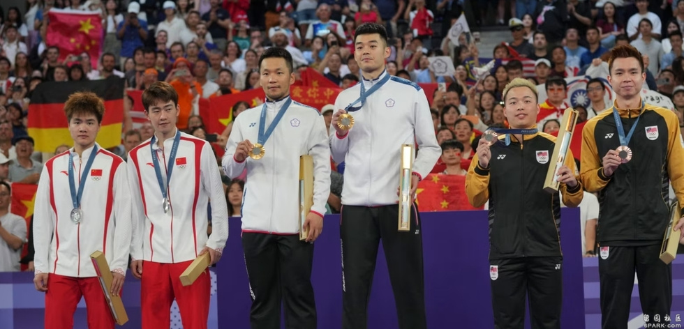
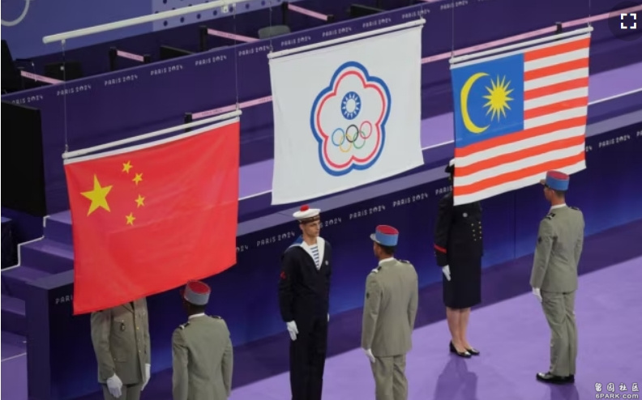
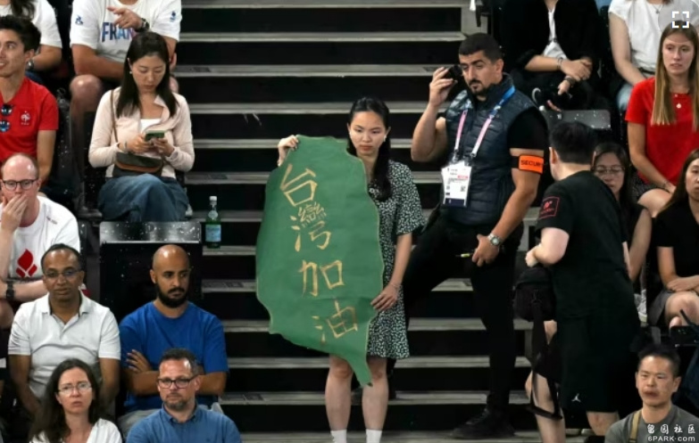
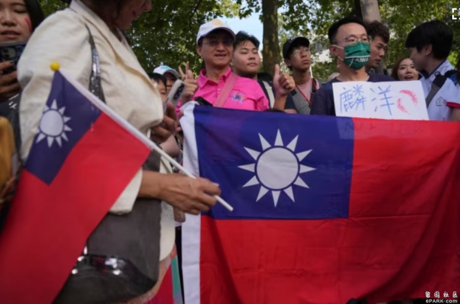

来自台湾的李洋和王齐麟站在2024巴黎奥运会羽毛球男双金牌领奖台上。（2024年8月4日）
台北 —
随着台湾选手在本届奥运拿到第一面金牌，台湾无法以正式国名参加国际体育赛事的话题再度引起讨论。专家指出，中国的经济崛起使台湾的国际参与更加困难，但中国的态度已引起国际反感，台湾在国际体坛已获得许多民主国家的实际支持。
中国打压台湾的国际参与 将体育泛政治化
本届巴黎奥运羽毛球男双8月8日进行决赛，来自台湾的李洋和王齐麟击败中国运动员梁伟铿和王昶，卫冕该项目的奥运金牌。当李、王二人站在颁奖台上时，升起的旗帜并不是台湾政府正式的青天白日满地红国旗，现场播放的也不是中华民国的国歌。

来自台湾的李洋和王齐麟赢得2024巴黎奥运会羽毛球男双金牌后，会场升起台湾在国际赛事上使用的“中华台北”的旗帜。（2024年8月4日）
台湾的正式国名是“中华民国”，但是自1981年以来，台湾就一直只能以“Chinese Taipei”(中华台北)的名称参加国际间的大型体育竞赛，国旗、国歌也大都被禁止在会场出现。因此，当巴黎奥运开幕式台湾队以字母T排序入场。法国二台（France 2）主持人直播时必须特别解释， “中华台北，就是我们熟知的台湾”。
台湾东海大学政治系副教授林子立指出，从1971联合国通过2758号决议文开始，台湾参与奥运的名称就成为各方拉锯的焦点，但是台湾曾经在1976年被要求以“台湾”名义参加该年举行的蒙特利尔奥运，当时执政的国民党政府以矮化为由拒绝。他表示， 1979年国际奥委会决议，台湾以“中华台北奥林匹克委员会”的名称参加奥运会;两年后，台湾奥委会与国际奥委会签订《洛桑协议》，台湾正式接纳“中华台北”名称做为参加奥运的代表团名称。
林子立对美国之音说:“随着中国的经济强盛，台湾的国际参与愈来愈困难，承认我们叫中华民国的仅有12个国家，承认台湾是我们国家的名字为零，因此，台湾在国际上有各式的名称，来代表台澎金马上的2300万人。国际运动赛事大都必须以｀中华台北＇参加。”
对此，旅居澳大利亚的台湾作家苏拾莹认为，这是国际弥漫的姑息主义使然。她对美国之音表示，台湾本来就已经是事实独立的国家，拥有自己的主权、领土与人民，国际间早就应该认同台湾以正式的国家名称参赛。
苏拾莹说:“其实为台湾争取在国际活动上｀正名＇早已在进行，只是在姑息主义下，各国都不愿触怒中共，就只好一拖再拖。上次2021年的东京奥运，台湾许多独派人士就再度大力推动｀东奥正名运动＇。”
台湾非营利足球队F.C. Vikings总监蔡欣颖在接受美国之音的采访时表示，根据她多年来带领球队参与国际赛事的经验，即使台湾拥有独立的主权，却因为中国持续打压台湾的国际地位，迫使其他国家遵循“一个中国”政策，连本应超然的体育赛事都不幸被泛政治化了。
她说:“在联合国及其相关组织中，大多数国家都遵循｀一个中国＇政策，这使得台湾在国际社会中的参与形式受到限制。在这样的背景下，台湾在国际赛事中成为了政治与体育的角力成果。”
蔡欣颖认为，台湾的运动员只具有参赛资格，在国际赛场被禁止使用国名，也不能使用台湾国歌或国旗，根本无法呈现台湾的国家身分以及主权，这不仅是以政治伤害体育，对于声称崇尚民主的更是一种讽刺。

在2024巴黎奥运会羽毛球男双半决赛赛场上，一名女子手持台湾地图形状，写有“台湾加油”字样的标语，她的身后站着一名赛场警卫。（2024年8月4日）
国际间对中国的姑息有临界点
台湾自1949年以来一直与中国分开管治。台湾拥有自己的宪法，并有独立的民主选举，拒绝北京宣称的主权。但国际奥委会规定禁止使用台湾国旗或国歌。这次巴黎奥运甚至将台湾与侵略乌克兰的俄罗斯和支持俄罗斯的白俄罗斯合并处理，台湾民众具有“台湾加油”字眼的广告牌、布条甚至毛巾都纷纷被中国民众检举，被大会没收。奥运羽毛球男双决赛时，台湾观众携带“Taiwan”、“麟洋”、珍珠奶茶、台湾传统点心图案等创意标语为选手加油，却在比赛还没开始遭到没收。
对此，台湾驻法代表吴志中表示，球迷的待遇非常不公，他说: “面对中国队时，国际奥委会就会用非常严格的方式对待台湾，满场都是五星旗，我们连｀加油＇字板都被收走。”
台湾非营利足球队F.C. Vikings总监蔡欣颖表示，这种情况反映了中国在国际体育界的影响力以及其对台湾的策略，因为中国是全球经济的重要经济体，影响许多国家遵照中国的政策立场，以维护与中国的合作关系。
她说:“这种国际现实使得台湾在全球体育舞台上面临挑战，体现了政治影响力在国际体育活动，也突显了国际间对台湾参与国际活动的现实困境。”
一位因安全顾虑不愿意透漏姓名的上海女性对美国之音透漏，地主国对该届奥委会的影响很大，看到法国顺应中国对台湾的打压，在奥运上无理地过度管制，这代表奥运过后，中国的物价肯定上涨。她说，这很明显是中国给法国经济上的好处，让法国配合，钱就是从国内来的，那么中国老百姓的日子又要苦了。
台湾东海大学政治系副教授林子立指出，最近国际间也开始对台湾的独立主权改变态度，例如2023年7月美国众议院无异议通过《台湾国际团结法》(Taiwan International Solidarity Act），厘清联合国第2758号决议，表明未涉及台湾在联合国的代表权或是台湾的主权;欧盟也追随美国于今年2月通过的《共同外交暨安全政策》(CFSP)年度执行报告决议案，强调中国对台湾的领土主张不具国际法基础，台湾与中国互不隶属，这些都是台湾在国际上争取独立地位的一小步。
林子立说:“这离台湾能用自己的名字参与国际赛事或是组织仍然非常遥远，因为中国在为数众多的全球发展中国家居于领导的地位，能在大会中占据主导的角色。”
旅居澳大利亚的台湾作家苏拾莹表示，这几年来海外的小粉红无所不用其极的打压台湾，态度蛮横无理，许多民主国家却碍于对华经济而坐视不管。
她说:“在习近平倡导民族主义的声浪下，小粉红嚣张的到处乱窜，配合中共政权，在国际上处处打压台湾。但国际潮流仍然希望息事宁人，反正不要闹事，尤其像奥运这种比赛，就维持现状就好，不要有冲突，不要有纠纷。”
苏拾莹认为，中国的跋扈在国际上越来越明显，久了就会有越来越多人对之反感，等到了临界点，民主社会也会忍不下去，群起改变现势。

来自台湾的李洋和王齐麟赢得2024巴黎奥运会羽毛球男双金牌后，台湾球迷在羽毛球赛场Porte de La Chapelle Arena外展示台湾旗帜参加庆祝活动。（2024年8月4日）
中国战狼作风使国际社会同情台湾
本届巴黎奥运会上发生了多起台湾观众手持的标语和旗帜遭抢夺和没收的情况，甚至有台湾观众在进入场馆前被要求涂抹掉脸上图画的台湾国旗，让在场的外国观众看不下去，都纷纷接下台湾应援物，开始为台湾发声。
旅居澳大利亚的台湾作家苏拾莹表示，由于科技日益进化，中国对台湾的打压和无理干预已经广为人知，奥运现场又身历其境，自然让外国观众很有感。
她说:“国际社会对中国其实越来越反感，何况网络时代，信息传播很快，中国的专制极权与外交上的霸道跋扈，很快地就传到世界的眼前了。”
台湾东海大学政治系副教授林子立指出，欧洲观众卖力地为台湾选手加油，也是因为自俄乌战争开打以来，中国持续的升高与俄罗斯的不封顶关系，引来普遍西方社会的反感。
他说:“中国的战狼外交是全世界的恶名昭彰，尽管在疫情结束后因经济表现不佳而有所收敛，但是遇到台湾议题，张牙舞爪的本性又忍不住的突显出来。”
台湾非营利足球队F.C. Vikings总监蔡欣颖表示，中国以政治干预台湾一切国际活动的无理作风，反而引起民主社会对台湾的同情。
她说:“中国对台湾的参加国际体育赛事的干预和打压极为积极，但是我们拥有许多民主国家的实际支持，以及对台湾选手的尊重，这种支持超越了政治的界限，通过体育活动表达了民主国家的共同价值观和情感。”
蔡欣颖指出，她曾经带领台湾球队参加丹麦主办的国际足球赛，主办方把台湾和中国的国旗并列，中国严重抗议台湾国旗出现，丹麦干脆用乌克兰国旗从中隔开，依旧让台湾和中国国旗并列。她认为，往后将会有更多民主国家以行动表达对台湾的支持。